Chocolate Strawberry Cake Rolls
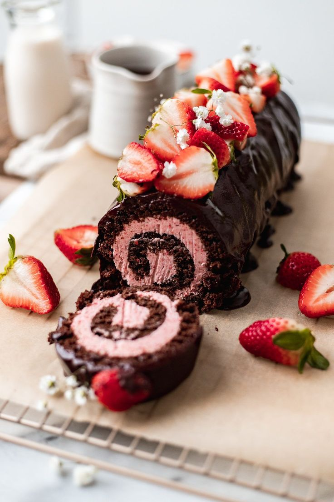
Ingredients
- 3/4 cups of flour
- 3 large eggs
- 1/3 teaspoon vanilla
- 1/3 cup of milk
- 1/4 cup cocoa powder
- 1/4 salt
- 1 teaspoon of baking powder
- 1 cup of strawberries
Instructions
- Preheat oven to 350 degrees Fahrenheit.
- For the cake roll, beat the eggs and sugar until light and fluffy in a mixing bowl.
- Pour in the flour, cocoa powder, baking powder, and salt into the egg mixture slowly.
- Bake for 10-12 minutes.
- Let it cool completely.
- For the filling, whip the heavy cream, powder sugar, and vanilla extract until a stiff peak forms.
- Add the strawberries into the filling batter and mix.
- Spread the filling and roll the cake.
Chocolate Raspberry Mousse Cake
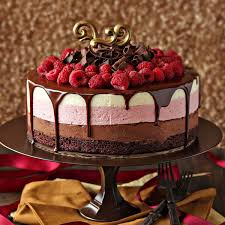
Ingredients
- 1 cup sugar
- 3/4 cup purpose flour
- 3/4 cup unsweetened cocoa powder
- 1 1/2 teaspoons baking powder
- 1 1/2 teaspoons baking soda
- 1 teaspoon salt
- 2 large eggs
- 1 cup of whole milk
- 1/2 cup of vegetable oil
- 2 teaspoons vanilla extract
- 1 cup of boiling water
- 1 cup heavy whipping cream
- 8 ounces cream cheese, softened
- 1/2 cup raspberry jam
- 1 cup fresh raspberries
- 8 ounces dark chocolate, chopped
Instructions
- Preheat your oven to 350 degrees Fahrenheit.
- Mix sugar, flour, cocoa powder, baking powder, baking soda, and salt in a bowl.
- Mix and add eggs, milk, vegetable oil, and vanilla extract into the batter.
- Bake for 30-35 minutes. Let the cake cool for 10 minutes.
- In a bowl, whip the heavy cream and sugar until a peak form.
- Beat the cream cheese until smooth and add the raspberry jam. Mix them both together.
- To make the ganache, heat the heavy cream and pour the dark chocolate. Let the ganache sit for 5 minutes.
- Spread the chocolate ganache and add some fresh raspberries on top of the cake.
S'mores Donuts
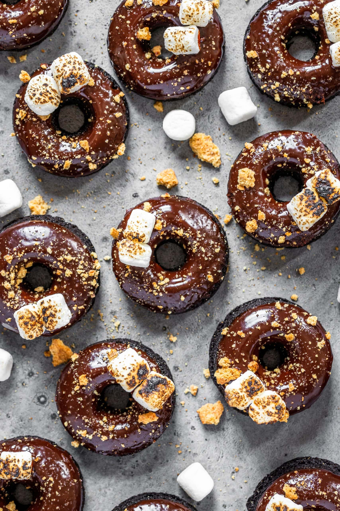
Ingredients
- 3 cup of flour
- 1/4 cup of sugar
- 1/4 cup of water
- 2 1/4 teaspoon of active yeast
- 3/4 cup of milk
- 1 large egg
- 3 tablespoons of melted butter
- 1 teaspoon vanilla extract
- 1/2 salt
- Graham crackers
- Chocolate chips
Instructions
- In a bowl, mix the flour, sugar, salt, water, and yeast. Let it sit for a while till it is foamy.
- Add the milk, egg, melted butter, and vanilla extract, and mix till the dough is formed.
- Knead the dough on a floured surface until smooth and elastic. place it in a greased bowl.
- Punch the dough and roll it up to a doughnut shape. Fry until it is golden brown.
- Once it is cooled, spread a layer of marshmallow creme on each doughnut
- Top it with graham cracker crumbs and chocolate chips.
Salted Caramel Chocolate Cupcakes
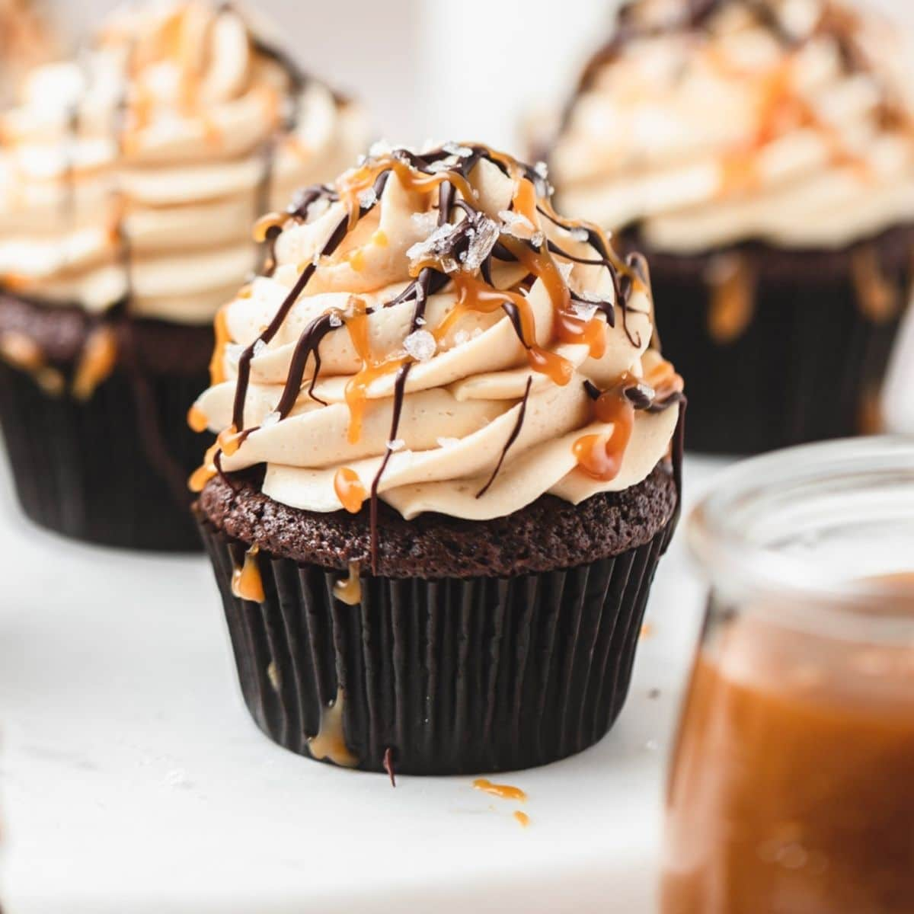
Ingredients
- 3/4 cup flour
- 1/3 Unsweetened cocoa powder
- 1/2 teaspoon of baking powder
- 1/2 teaspoon of baking soda
- 1/2 salt
- 2 tablespoons of unsalted butter, softened
- 3/4 sugar
- 2 eggs
- 1 teaspoon Vanilla extract
- 3/4 cup of hot coffee
- 3 ounces bittersweet chocolate, chopped
- 1 cup salted caramel sauce
Instructions
- Preheat your oven to 350 degrees Fahrenheit
- Whisk together flour, cocoa powder, baking powder, baking soda, and salt in a bowl.
- Mix the butter and sugar until light and fluffy. Beat the eggs one at a time, then add the vanilla.
- Combine dry ingredients and hot coffee with the wet ingredients and mix well.
- Add some chocolate to the batter.
- Divide the chocolate batter evenly amount the cupcake tray, about 2/3 full.
- Bake for 18-22 minutes.
- Frost with salted caramel sauce.
Chocolate Cream & Cherries Tiramisu
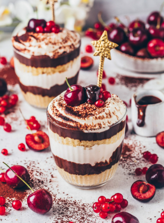
Ingredients
- 1 1/4 mascarpone
- 3 eggs
- 2 3/4 heavy Cream
- 1 1/4 sugar
- 1 cup of coffee
- 2 packs of ladyfingers
- 1 teaspoon cocoa powder
- 2 spoons of cherries preserve
- 1/2 teaspoon salt
Instructions
- Whisk the mascarpone and sugar until it is smooth.
- Whip the heavy cream until it forms a peak.
- Gently fold the whipped cream into the mascarpone mixture.
- Layer the ladyfingers with the mascarpone cream, cherry preserves, cocoa powder, and chocolate.
- Repeat the layers, finishing with a final layer of cocoa powder and chocolate.
- Chill in the refrigerator for at least 8 hours
- Slice and serve.
Raspberry Macarons
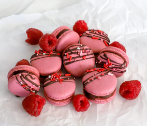
Ingredients
- 1 1/4 cup of almond flour
- 3/4 cup powdered sugar
- 3 egg whites
- 1/4 teaspoon cream of tarter
- 1/3 cup of sugar
- 1 drop of red/pink food coloring
- A pinch of cream of tartar
- 1/4 cup of raspberry jam for filling
- 6 ounces of fresh raspberries
- 1 tablespoon lemon juice
Instructions
- Preheat your oven to 350 degrees Fahrenheit.
- Sift the almond flour and powdered sugar in a bowl.
- Beat the egg white until it is frothy. Add sugar and a pinch of cream of tartar. Beat until a peak is formed.
- Fold in the almond flour mixture and a few drops of red/pink food coloring.
- Pipe small circles onto the baking sheet. Tap sheet to release air bubbles.
- Let it sit for 30-60 minutes until the skin is formed.
- Bake for 15-20 minutes at 300 degrees Fahrenheit
- Add the raspberry jam for filling.
- Add some fresh raspberries on top.
- Refrigerate for 24 hours.
Chocolate Lava Cake

Ingredients
- 4 oz bittersweet chocolate, finely chopped
- 1/2 cup unsalted butter, cut into pieces
- 1/4 cup all-purpose flour
- 1/2 cup powdered sugar
- 1/8 tsp salt
- 2 large eggs
- 2 egg yolks
- 1/2 tsp vanilla extract
Instructions
- Preheat oven to 425 Fahrenheit (220 Celsius). Grease and flour four 6-ounce ramekins.
- In a bowl, melt chocolate and butter over a double boiler or microwave in 20 second, stirring until smooth.
- In a separate bowl, whisk together flour, powdered sugar, and salt.
- In another bowl, beat eggs, egg yolks, and vanilla extract until light and fluffy.
- Gradually mix the melted chocolate into the egg mixture, then fold in the dry ingredients until just combined.
- Divide batter evenly into the prepared ramekins and place on a baking sheet.
- Bake for 12-14 minutes, until the edges are firm, but the center is slightly soft.
- Let cool for 1-2 minutes, then run a knife around the edges and serve onto plates. Serve immediately.
No-Bake Cheesecake
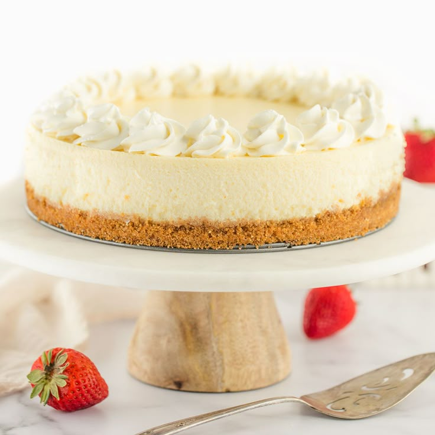
Ingredients
- 2 cups graham cracker crumbs
- 1/2 cup melted butter
- 1/4 cup sugar
- 16 oz cream cheese, softened
- 1 cup powdered sugar
- 1 teaspoon vanilla extract
- 1 cup heavy whipping cream, chilled
Instructions
- In a bowl, mix graham cracker crumbs, melted butter, and sugar. Press firmly into a 9 inch pan.
- In a bowl, beat cream cheese, powdered sugar, and vanilla extract until smooth and creamy.
- In a separate bowl, whip heavy cream until stiff peaks form, then gently fold into the cream cheese mixture.
- Spread the mixture evenly over the prepared crust.
- Cover and refrigerate for at least 4 hours, or overnight for best results.
- Before serving, top with fresh fruit, chocolate drizzle, or caramel sauce.
Classic Tiramisu
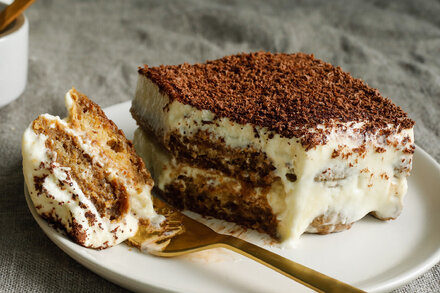
Ingredients
- 1 cup strong brewed coffee, cooled
- 2 tablespoon coffee liqueur
- 1/2 cup sugar
- 8 oz mascarpone cheese, softened
- 3/4 cup heavy whipping cream, chilled
- 24 ladyfingers
- Cocoa powder for dusting
Instructions
- Mix coffee and liqueur in a shallow dish and set aside.
- In a bowl, whisk egg yolks and sugar together, then place over a pot of simmering water, whisking until thickened. Remove from heat.
- Stir in mascarpone cheese until smooth.
- In a separate bowl, whip heavy cream until stiff peaks form, then gently fold into the mascarpone mixture.
- Quickly dip each ladyfinger into the coffee mixture and arrange in a single layer in a baking dish.
- Spread half of the mascarpone mixture over the ladyfingers and repeat the layers.
- Cover and refrigerate for at least 4 hours or overnight.
- Dust with cocoa powder before serving.
Strawberry Shortcake

Ingredients
- 2 cups all purpose flour
- 1/4 cup sugar
- 1 tablespoon baking powder
- 1/2 teaspoon salt
- 1/2 cup cold butter, cubed
- 2/3 cup milk
- 1 teaspoon vanilla extract
- 1 pound fresh strawberries, sliced
- 1 cup heavy whipping cream, chilled
- 1 tablespoon powdered sugar (for whipped cream)
Instructions
- Preheat oven to 425 Fahrenheit (220 Celsius). Line a baking sheet with parchment paper.
- In a large bowl, whisk together flour, sugar, baking powder, and salt.
- Cut in cold butter using a pastry cutter or fork until the mixture resembles crumbs.
- Stir in milk and vanilla extract until combined and do not overmix.
- Drop dough onto the baking sheet in 6-8 rounds and bake for 12-15 minutes until golden brown.
- Toss sliced strawberries with sugar and let sit for 10 minutes.
- In a separate bowl, whip heavy cream and powdered sugar until soft peaks form.
- Slice shortcakes in half, layer with strawberries and whipped cream, and top with the other half.
Peanut Butter Cups
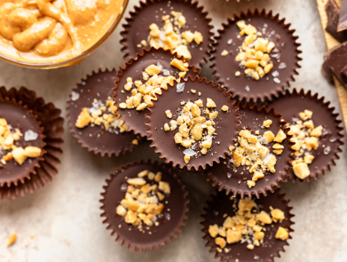
Ingredients
- 1 cup creamy peanut butter
- 1/4 cup powdered sugar
- 2 cups chocolate chips (milk or dark)
- 2 tablespoons of butter
- 1/2 teaspoon of vanilla extract
Instructions
- Line a mini muffin tin with paper liners.
- In a bowl, mix peanut butter, powdered sugar, and vanilla extract until smooth.
- Melt chocolate chips and butter together in a bowl over simmering water or in the microwave for 20 seconds, stirring frequently.
- Spoon a small amount of melted chocolate into each liner, then add a small dollop of the peanut butter mixture.
- Top with more melted chocolate and gently tap the tray to level the layers.
- Refrigerate for at least 1 hour until firm and serve.
New Orleans-Style Beignets
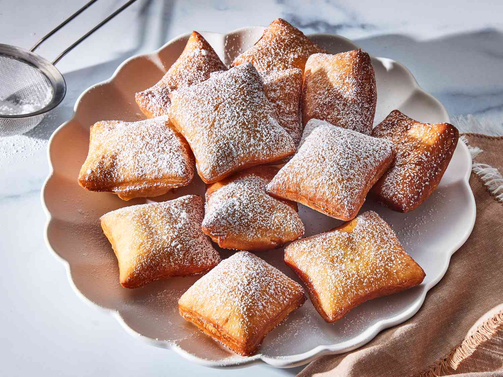
Ingredients
- 4 cups all-purpose flour
- 1 1/4 cup whole milk, warm
- 2 teaspoons active dry yeast
- 1/2 cup white sugar
- 1 teaspoon salt
- 2 large eggs
- Cocoa powder for dusting
- 6 tablespoons unsalted butter, softened
- Vegetable oil, for frying
- 1 cup powdered sugar, for dusting
Instructions
- In a bowl, combine the warm milk and active dry yeast. Whisk until the yeast dissolves. Let it sit for 5-10 minutes until it becomes frothy.
- Add the sugar, salt, eggs, butter, and vanilla extract to the yeast mixture. Stir until well combined.
- Mix in the flour, stirring continuously until a soft, slightly sticky dough forms.
- Knead the dough for 3-4 minutes until smooth and elastic.
- Transfer the dough to a lightly greased bowl, cover with plastic wrap and a kitchen towel, and let it rise in a warm place for 1 hour.
- Roll the dough out into a large square about 1/2 inch thick. Using a pizza cutter, slice into 2.5 by 2.5 inch squares.
- In a fryer, heat vegetable oil to 350 Fahrenheit (175 Celsius).
- Carefully drop a few dough squares into the hot oil, making sure not to overcrowd the pot.
- Fry for 1-2 minutes per side, flipping once, until golden brown and serve.
Red Velvet Pizookies
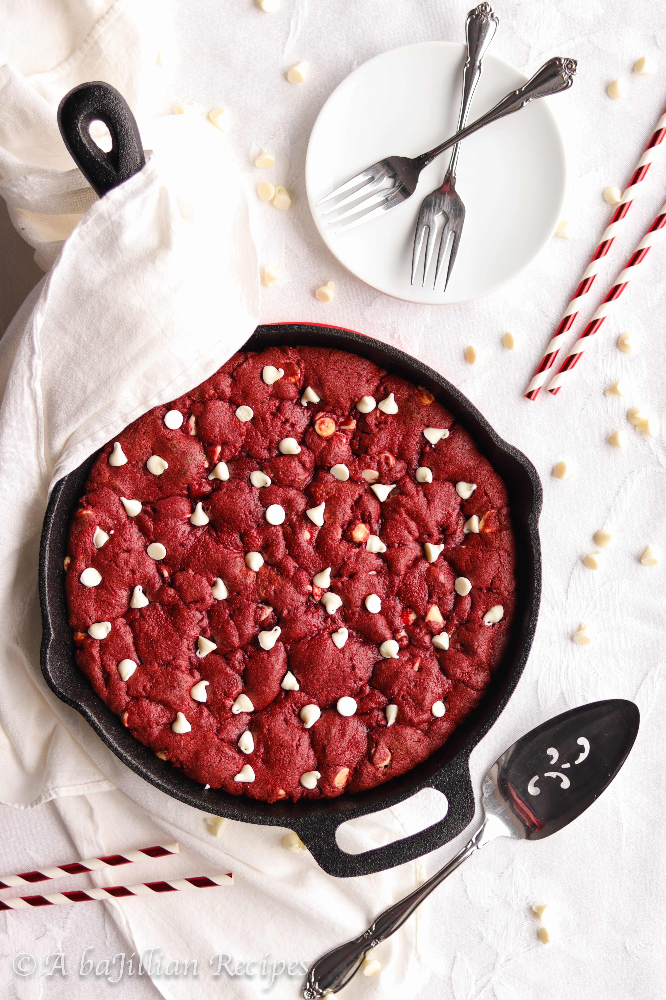
Ingredients
- 1 1/2 cups all-purpose flour
- 1/4 cup cocoa powder
- 1 teaspoon baking soda
- 1/2 teaspoon salt
- 2 tablespoons cornstarch
- 1 1/2 sticks unsalted butter, melted (3/4 cup)
- 3/4 cup white sugar
- 1/2 cup light brown sugar
- 1 large egg + 1 egg yolk
- 1 teaspoon vanilla extract
- 1/3 to 1/2 cup white chocolate chips
- 1/3 cup semi-sweet chocolate, chopped
- 1 tablespoon red food coloring
Instructions
- In a small bowl, whisk together the flour, cocoa powder, baking soda, salt, and cornstarch.
- In a separate mixing bowl, combine the melted butter, white sugar, brown sugar, egg, egg yolk, and vanilla extract. Whisk until smooth.
- Add the dry ingredients to the wet ingredients, stirring until a soft dough forms.
- Fold in the white chocolate chips and semi-sweet chocolate chunks.
- Cover the dough and refrigerate for 30 minutes to enhance the texture and flavor.
- Preheat oven to 350 Fahrenheit (175 Celsius).
- Grease mini skillets or ramekins with butter or cooking spray to prevent sticking.
- Bake for 12-14 minutes, or until the edges are golden but the center remains slightly soft.
- Let the pizookies cool for a couple of minutes and serve.
Earl Grey Creme Brulee
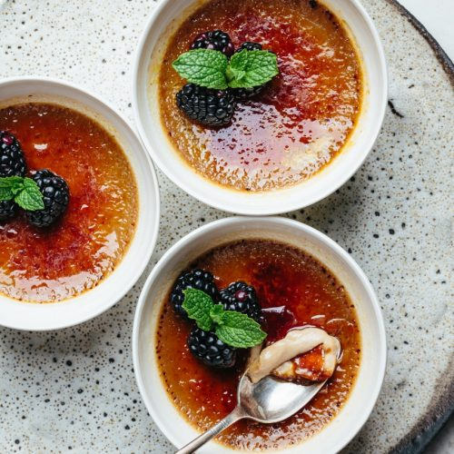
Ingredients
- 2 cups of heavy cream
- 2 Earl Grey tea bags
- 4 egg yolks
- 1/2 cup of sugar
- 1 tablespoon vanilla extract
Instructions
- Preheat oven to 325 Fahrenheit.
- Heat the cream and Earl Grey tea bags in a pan until simmering and remove the tea bags.
- Slowly add warm cream while whisking the egg yolks and sugar.
- Add vanilla extract.
- Pour the mixture into a ceramic bowl and bake it in a water bath for 40-45 minutes.
- Chill the custards, sprinkle with sugar on top of the custard, and caramelize with a kitchen fire torch.
Biscoff Truffles
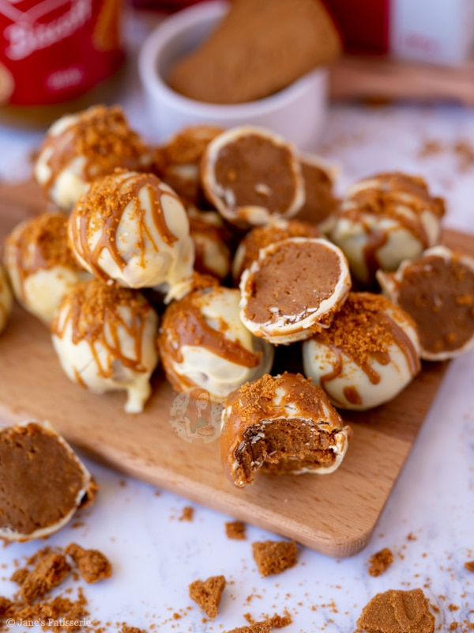
Ingredients
- 1 cup Biscoff spread
- 2 cups of powdered sugar
- 1/2 cup graham cracker crumbs
- 1/2 teaspoon vanilla extract
- 1 cup dark chocolate chips
Instructions
- Mix Biscoff spread, powdered sugar, graham cracker crumbs, and vanilla extract until smooth.
- Roll the mixture into small balls and place on a baking sheet.
- Freeze for 15 minutes.
- Dip each ball into melted chocolate and place back on the baking sheet.
- Refrigerate until the chocolate is set and serve.